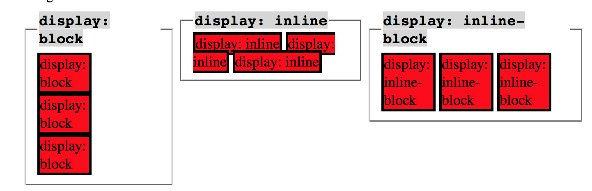

What does it mean to display inline vs using inline block?
To understand inline and inline block elements, let first take a look at the difference between inline and block elements.
-
Inline elements:
- Respect left and right margins and padding, but not top and bottom
- Cannot have a width and height set
- Allow other elements to sit to their left and right
- Some more examples: img, br, a, em, strong Block elements
- Forces a line break after each element
- Some more examples: p, h1, ul, li, almost everything else
An inline-block is a hyrid; it is an element laced as an inline element, but behaves as a block element. The above pictures demostrates this visually. Now, try to place a few inline, block, and inline-block elements on the page and see for yourself.Picture Source